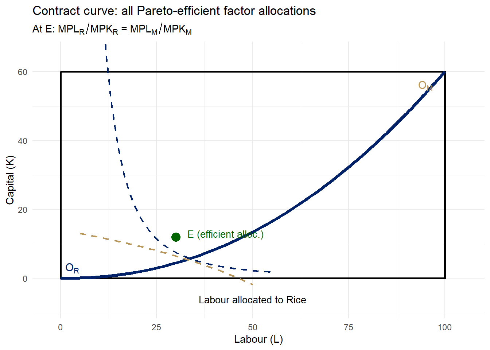

Modern Theories: Heckscher-Ohlin & Lewis Dual-Sector Model
Econ 2203 | International Trade and Policy in Agriculture
Nithin M
Department of Development Economics
2026-05-23
Recap: The Missing Piece in Ricardo
Last lecture: Comparative advantage — trade is driven by relative opportunity costs.
What Ricardo established: India has lower opportunity cost in Rice → exports Rice; World has lower opportunity cost in Wheat → exports Wheat; both gain from specialisation and trade.
What Ricardo left unanswered:
Why do opportunity costs differ across countries in the first place?
The Heckscher-Ohlin answer: Opportunity costs differ because countries differ in their endowments of factors of production (labour \(L\), capital \(K\), land \(T\)). And goods differ in factor intensity — how much of each factor they require.
The Heckscher-Ohlin Framework
The H-O model is the workhorse of international trade theory. It explains why comparative advantages arise from factor abundance.
Setup: Two countries (India \(I\), USA \(U\)), two goods (Rice \(R\), Machines \(M\)), two factors (Labour \(L\), Capital \(K\)); identical technologies across countries.
Factor intensity: Rice is labour-intensive relative to Machines if: \[\left(\frac{K}{L}\right)_R < \left(\frac{K}{L}\right)_M\]
Factor abundance (physical definition): India is labour-abundant if: \[\left(\frac{K}{L}\right)^I < \left(\frac{K}{L}\right)^U\]
Factor abundance (price definition):\[\left(\frac{w}{r}\right)^I < \left(\frac{w}{r}\right)^U \qquad \text{(labour is relatively cheaper in India)}\]
H-O Theorem: Formal Statement
Theorem (Heckscher 1919; Ohlin 1933):
A country exports the good that uses its abundant factor intensively.
Applied to India and USA:
\[\left(\frac{K}{L}\right)^I < \left(\frac{K}{L}\right)^U \quad \text{(India is labour-abundant)}\]
\[\left(\frac{K}{L}\right)_R < \left(\frac{K}{L}\right)_M \quad \text{(Rice is labour-intensive)}\]
\[\therefore \quad \text{India exports Rice; USA exports Machines}\]
Intuition: Labour-abundant India faces a low relative wage \(\Rightarrow\) labour-intensive Rice is relatively cheaper to produce there.
In autarky, India’s abundant labour \(\Rightarrow\) low \(w/r\)\(\Rightarrow\) low relative price of Rice:
Opening to trade raises \(P_R/P_M\) in India — India’s Rice sector expands, Machines sector contracts.
The Edgeworth Box: Factor Allocation
The Edgeworth box shows all efficient ways to allocate \(\bar{L}\) and \(\bar{K}\) between two sectors.
Origin \(O_R\): Rice sector
Origin \(O_M\): Machines sector (rotated 180°)
Contract curve: locus of tangencies of Rice and Machine isoquants \[\frac{MPL_R}{MPK_R} = \frac{MPL_M}{MPK_M}\]
All efficient allocations lie on the contract curve
The contract curve bows toward the labour axis (Rice is labour-intensive)
Show R code
library(ggplot2)# Box: total Labour = 100, total Capital = 60# Rice: Q_R = L_R^0.7 * K_R^0.3 (labour-intensive)# Machines: Q_M = L_M^0.3 * K_M^0.7 (capital-intensive)# Contract curve from MRTS_R = MRTS_M => K_R = 540*L_R / (4900 - 40*L_R)L_cc <-seq(1, 99, by =0.5)K_cc <-540* L_cc / (4900-40* L_cc)# Point E exactly on the contract curve at L_R = 50L_E <-50K_E <-540* L_E / (4900-40* L_E) # = 9.31# Rice isoquant through EQ_R_E <- L_E^0.7* K_E^0.3iL_R <-seq(23, 96, by =0.5)iK_R <- (Q_R_E / iL_R^0.7)^(1/0.3)df_R <-subset(data.frame(L = iL_R, K = iK_R), K >=0& K <=60)# Machines isoquant through E (drawn in original coords)Q_M_E <- (100- L_E)^0.3* (60- K_E)^0.7iLM <-seq(34, 99, by =0.5)iKM <- (Q_M_E / iLM^0.3)^(1/0.7)df_M <-subset(data.frame(L =100- iLM, K =60- iKM), K >=0& K <=60& L >=0& L <=100)ggplot() +annotate("rect", xmin =0, xmax =100, ymin =0, ymax =60,fill ="#f8f8f8", color ="black", linewidth =1.1) +# Isoquantsgeom_line(data = df_R, aes(x = L, y = K),color ="#012169", linewidth =0.9, linetype ="dashed") +geom_line(data = df_M, aes(x = L, y = K),color ="#B9975B", linewidth =0.9, linetype ="dashed") +# Contract curvegeom_line(data =data.frame(L = L_cc, K = K_cc), aes(x = L, y = K),color ="#012169", linewidth =1.6) +# Efficient allocation Egeom_point(aes(x = L_E, y = K_E), size =4, color ="darkgreen") +annotate("text", x =54, y =12, hjust =0, size =3.5,label ="E (efficient alloc.)", color ="darkgreen") +# Rice originannotate("text", x =2, y =2.5, hjust =0, size =4, fontface ="bold",label ="O[R]", parse =TRUE, color ="#012169") +annotate("text", x =2, y =7.5, hjust =0, size =3,label ="Rice sector", color ="#012169") +# Machines originannotate("text", x =98, y =57.5, hjust =1, size =4, fontface ="bold",label ="O[M]", parse =TRUE, color ="#B9975B") +annotate("text", x =98, y =52.5, hjust =1, size =3,label ="Machines sector", color ="#B9975B") +# Isoquant labelsannotate("text", x =82, y =2.5, hjust =0, size =3,label ="Rice isoquant", color ="#012169") +annotate("text", x =5, y =40, hjust =0, size =3,label ="Machines\nisoquant", color ="#B9975B") +# Contract curve labelannotate("text", x =64, y =27, hjust =0, size =3.5, fontface ="bold",label ="Contract\ncurve", color ="#012169") +labs(title ="Edgeworth box: efficient factor allocations",subtitle =expression(paste("At E: ", MPL[R]/MPK[R], " = ", MPL[M]/MPK[M])),x ="Labour allocated to Rice",y ="Capital allocated to Rice" ) +coord_cartesian(xlim =c(-2, 103), ylim =c(-4, 62)) +theme_minimal(base_size =11)

Figure 1: Edgeworth Box: Efficient Factor Allocation Between Rice and Machines Source: Author’s illustration.
From Edgeworth Box to PPF
The Production Possibility Frontier is derived from the contract curve:
Key insight:
Every point on the contract curve corresponds to a point on the PPF
Moving along the contract curve (reallocating factors) traces out the PPF
The slope of the PPF at any point equals the negative of the relative price \(P_R/P_M\)
Factor intensity and PPF shape:
Because Rice is labour-intensive: - Moving labour from Machines → Rice: output of Rice rises fast (labour goes to its intensive use) - PPF is concave (bowed outward) — increasing opportunity costs
\[\frac{d^2 R}{d M^2} < 0\]
In the Ricardian model, constant labour requirements → linear PPF. H-O gives a curved PPF.
Under H-O assumptions, free trade in goods completely equalises factor prices across countries — even without factor mobility:
\[w^I = w^U \qquad \text{(wages equalise)}\]\[r^I = r^U \qquad \text{(returns to capital equalise)}\]
Intuition:
Trade in goods is an indirect form of trading factors
India exporting Rice is equivalent to exporting embedded labour
As India expands Rice production, labour demand rises → Indian wages rise
As USA imports Rice, labour demand in USA Rice sector falls → US wages fall
In equilibrium: \(w^I = w^U\)
The FPE insight
Free trade is a perfect substitute for factor mobility. This explains why labour migration and goods trade are strategic complements in policy debates.
FPE: Assumptions and Critique
FPE requires very strong assumptions:
Assumption
Status in reality
Identical technologies
Violated (TFP gaps are large)
Free trade in all goods
Violated (tariffs, NTBs)
No factor intensity reversal
Usually holds
Incomplete specialisation
Often violated
No transport costs
Violated
Theorem 2: Stolper-Samuelson Theorem
Theorem (Stolper and Samuelson 1941):
A rise in the relative price of a good raises the real return to the factor used intensively in that good’s production, and lowers the real return to the other factor — more than proportionally:
where \(\hat{x} \equiv d\ln x\) denotes percentage change, and Rice is labour-intensive.
Formal result:
\[\hat{w} > \hat{P}_R > \hat{P}_M > \hat{r}\]
This is the magnification effect: factor price changes are magnified relative to goods price changes.
Applied to India opening to trade:
\[P_R \uparrow \Rightarrow w \uparrow\uparrow, \quad r \downarrow \quad \text{(Indian workers gain; Indian capital owners lose)}\]
\[P_M \uparrow \Rightarrow r \uparrow\uparrow, \quad w \downarrow \quad \text{(US capital owners gain; US workers lose → political economy of protectionism!)}\]
Stolper-Samuelson: Policy Relevance
Why does Stolper-Samuelson matter for policy?
It explains who lobbies for and against trade liberalisation:
Labour in labour-abundant countries → pro-trade
Capital in labour-abundant countries → anti-trade (or sector-specific)
Labour in capital-abundant countries → anti-trade (e.g., US manufacturing unions)
India’s agricultural trade policy: When India raises rice export prices via MSP increases: \(P_R \uparrow \Rightarrow w_{\text{agri}} \uparrow \Rightarrow\) rural wages rise — Stolper-Samuelson in action.
The compensation principle: Even when aggregate welfare rises, there are distributional losers. A country could use the gains to compensate losers, but in practice: compensation schemes are costly, political constraints prevent redistribution, short-run adjustment costs fall unevenly. This is why trade adjustment assistance (TAA) programs exist.
Theorem 3: Rybczynski Theorem
Theorem (Rybczynski 1955):
At constant goods prices, an increase in the endowment of a factor causes:
\[L \uparrow \Rightarrow Q_R \uparrow\uparrow \text{ and } Q_M \downarrow\]
More precisely:
\[\hat{Q}_R > \hat{L} > 0 > \hat{Q}_M\]
Output of the labour-intensive good rises more than proportionally to the labour increase
Output of the capital-intensive good falls absolutely
Intuition: Expanding Rice output (to absorb new labour) requires withdrawing capital from Machines, even though capital endowment is unchanged. At constant prices, the only way to re-equate factor ratios is to pull capital into Rice and contract Machines.
India application: India’s rural-to-urban migration (labour inflow to manufacturing): \[L_{\text{mfg}} \uparrow \Rightarrow Q_{\text{mfg}} \uparrow\uparrow, \quad Q_{\text{agri}} \downarrow\] Structural transformation is partly a Rybczynski phenomenon.
Rybczynski Effect: PPF Diagram
An inflow of labour rotates the PPF outward, but asymmetrically:
The Rice (labour-intensive) intercept expands greatly
The Machines (capital-intensive) intercept contracts
At the original price ratio, the economy moves from A to B:
More Rice produced (\(Q_R \uparrow\uparrow\))
Fewer Machines (\(Q_M \downarrow\))
This is the Rybczynski line — locus of output combinations at constant prices as labour endowment varies.
Show R code
library(ggplot2)M_seq <-seq(0, 110, by=1)rice_before <-pmax(0, 200*sqrt(pmax(0, 1- (M_seq/100)^2)))rice_after <-pmax(0, 260*sqrt(pmax(0, 1- (M_seq/88)^2)))df_ryb <-data.frame(M =c(M_seq, M_seq),Rice =c(rice_before, rice_after),period =rep(c("Before labour inflow (L=100)","After labour inflow (L=130)"), each=length(M_seq)))ggplot(df_ryb, aes(x=M, y=Rice, color=period, linetype=period)) +geom_line(linewidth=1.5) +# Price line (slope = constant P_R/P_M)geom_abline(slope=-1.8, intercept=162, color="grey60",linetype="dotted", linewidth=0.8) +# Point A (before)geom_point(aes(x=45, y=100), inherit.aes=FALSE,color="#012169", size=4) +annotate("text", x=48, y=100, label="A (before)",hjust=0, size=3.2, color="#012169") +# Point B (after) — same price line, more Rice, less Mgeom_point(aes(x=30, y=136), inherit.aes=FALSE,color="#B9975B", size=4) +annotate("text", x=33, y=136, label="B (after)\nRice↑, Mach↓",hjust=0, size=3.2, color="#B9975B") +annotate("segment", x=45, y=100, xend=30, yend=136,arrow=arrow(length=unit(0.25,"cm")),color="darkgreen", linewidth=1) +annotate("text", x=22, y=115,label="Rybczynski\neffect", color="darkgreen",size=3.5, hjust=0.5, fontface="bold") +scale_color_manual(values=c("Before labour inflow (L=100)"="#012169","After labour inflow (L=130)"="#B9975B")) +scale_linetype_manual(values=c("Before labour inflow (L=100)"="solid","After labour inflow (L=130)"="dashed")) +labs(title="Labour inflow expands Rice output and contracts Machines",subtitle="At constant goods prices — pure Rybczynski movement",x="Machines", y="Rice", color=NULL, linetype=NULL) +theme_minimal(base_size=11) +theme(legend.position="bottom")
Figure 3: Factor Intensity of India’s Exports vs Imports (illustrative) Source: Author’s illustration based on DGCI&S / World Bank data.
India does NOT exhibit a Leontief paradox — it exports labour-intensive goods, consistent with H-O.
Explanations for the Leontief Paradox
Several resolutions have been proposed:
Human capital: US labour is highly skilled — skill-adjusted, US workers embody large amounts of human capital (\(\text{Effective } K/L = (K + K_H)/L\))
Factor intensity reversals: Same good can be labour-intensive in one country and capital-intensive in another (different factor prices → different techniques)
Natural resource abundance: US imports include oil and raw materials — these are capital-intensive; excluding natural resource industries resolves much of the paradox
Demand bias: US consumers have stronger preference for capital-intensive goods; demand effects can offset supply-side comparative advantage
While H-O focuses on between-country differences, the Lewis model explains how factor endowments evolve within a developing country:
Two sectors: Traditional sector (agriculture) with large labour surplus (\(MPL_A \approx 0\)); Modern sector (industry/services) with higher wages.
Lewis’s key assumption:\(MPL_A < \bar{w}_{\text{subsistence}}\) — a pool of “surplus labour” in agriculture can be absorbed by industry without raising agricultural wages.
Implications for agricultural trade during Lewis transition:
Low rural wages → comparative advantage in labour-intensive agricultural exports
Eventually: Rybczynski-type shift away from agricultural exports
East Asia’s trajectory: Japan (1950s–70s) → South Korea (1970s–90s) → China (2000s–) each followed this path: strong agricultural/labour-intensive exports early, shifting to capital-intensive manufactures.
Figure 4: Lewis Model: Surplus Labour Transfer and Structural Transformation Source: Author’s illustration after Lewis (1954).
H-O, Lewis, and India’s Agricultural Exports
Connecting the models:
Mechanism
H-O
Lewis
Source of CA
Factor endowments
Wage dualism
Key variable
\(K/L\) ratio
\(MPL_A\) vs \(\bar{w}\)
Trade prediction
Export labour-intensive goods
Export goods with surplus-labour content
Dynamics
Static
Dynamic (transition)
Combined implication for India: India currently sits at an early Lewis stage — large agricultural labour surplus (~40% of workforce); low rural wages → comparative advantage in labour-intensive agri exports.
India should invest in agricultural productivity to maintain competitiveness even as wages rise — moving up the value chain rather than defending low-wage advantage.
The Modern Theory of Trade: Summary
Three pillars of the H-O framework:
H-O Theorem: countries export goods intensive in their abundant factor
Empirical evidence: Factor content of trade is mixed (Trefler 1995); India’s labour-intensive export pattern is confirmed; wage convergence is partial (direction correct); Stolper-Samuelson distributional effects are strong in the long run; Rybczynski structural change is well-supported by East Asian data.
What H-O cannot explain: Intra-industry trade; trade between similar countries; scale economies → New Trade Theory (Lecture 6)
Looking Ahead: New Trade Theory
Why do we need a theory beyond H-O?
\(\approx 60\%\) of world trade is intra-industry (exchanging similar goods)
Large share of trade is between similar, high-income countries
Scale economies matter — firms, not just countries, have comparative advantages
Krugman’s (1979) insight:
Even with identical factor endowments, countries gain from trade because:
Each country specialises in a different variety of the same good — gains arise from love of variety, not factor endowments.
Next lecture: Economies of scale, monopolistic competition, and the new economic geography — why do trade and production cluster? And what does this mean for India’s agricultural processing sector?
Appendix
Additional Resources
Further Reading
International Economics — Salvatore (Ch. 4-5)
International Economics — Appleyard & Field (Ch. 4-5)